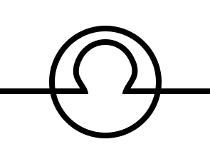
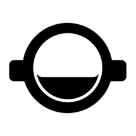

Web Development and Design · Wildlife Conservation Outreach
I am designing and developing a new website for the East Bay Wildlife Connectivity Project, with a focus on making wildlife research and conservation information engaging and approachable while encouraging public support and donations. I am shaping the visual direction, page layouts, and overall user experience in Figma before building the site in WordPress using HTML, CSS, and Bootstrap.
This project supports East Bay wildlife by creating crossings that reconnect habitats fragmented by roads and other infrastructure.
This is a currently in progress project. As of now I have started developing the branding for the website and project, inlcuding logo prototypes, and a style guide, which includes the color palette, typography, and general components for the website. I plan on keeping the design for the website very clean and image heavy. Since the goal of the site is for public education and encouraging donations, it should be highly accesable and welcoming to viewer.
Grass:
#6B893A
Primary
Gray:
#939B93
Secondary
Pastel Yellow:
#FFD889
Accent
Slate Blue:
#7086AB
Supporting
Cream:
#F7F4EE
Background
Charcoal:
#211F1F
Main Text
<h1>
<h2>
…
Font:
Syne Mono
<p>
<a>
…
Font:
Calibri

Hand-drawn illustrations were used to make the world feel more narrative and open-ended, leaving room for the viewer to fill in some of the gaps with their own imagination. A lot of the drawings have a blueprint or outline-like feel to them, combining structure with a bit of ambiguity to support the speculative nature of the project.

I started with a symbol commonly used in engineering and physics to represent light. It felt fitting given the industrial systems and structural focus within Lowlight Society.
From there, I reworked the form and incorporated a subtle reference to the helmets many upper-level citizens are required to wear.

By repurposing such a familiar symbol to represent the society, the Beyond creates a false sense of significance and superiority around the upper levels.